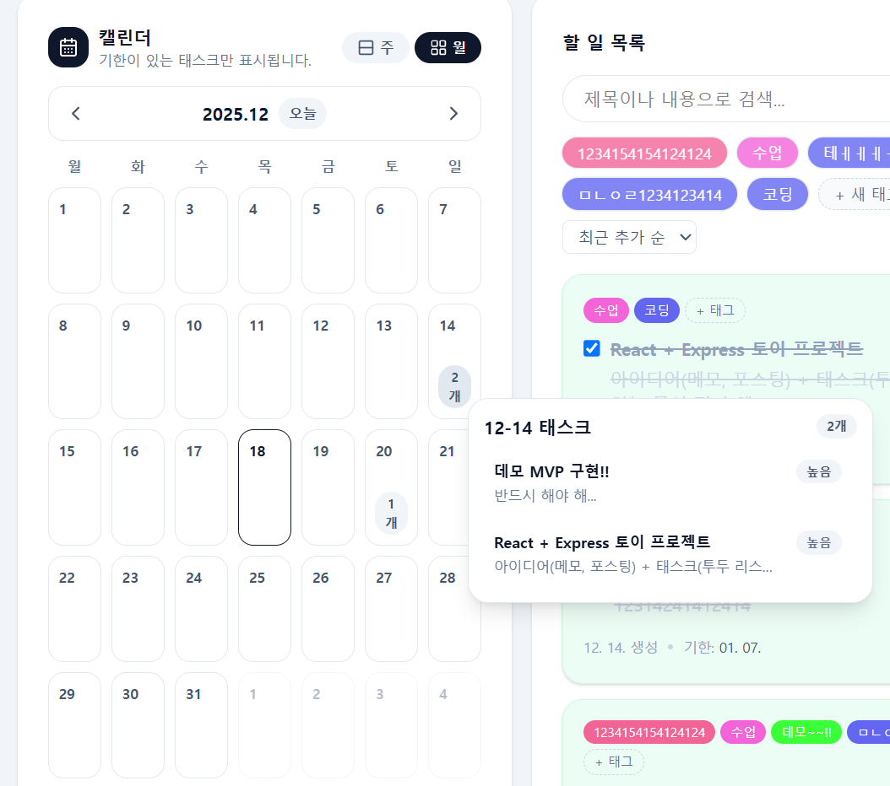
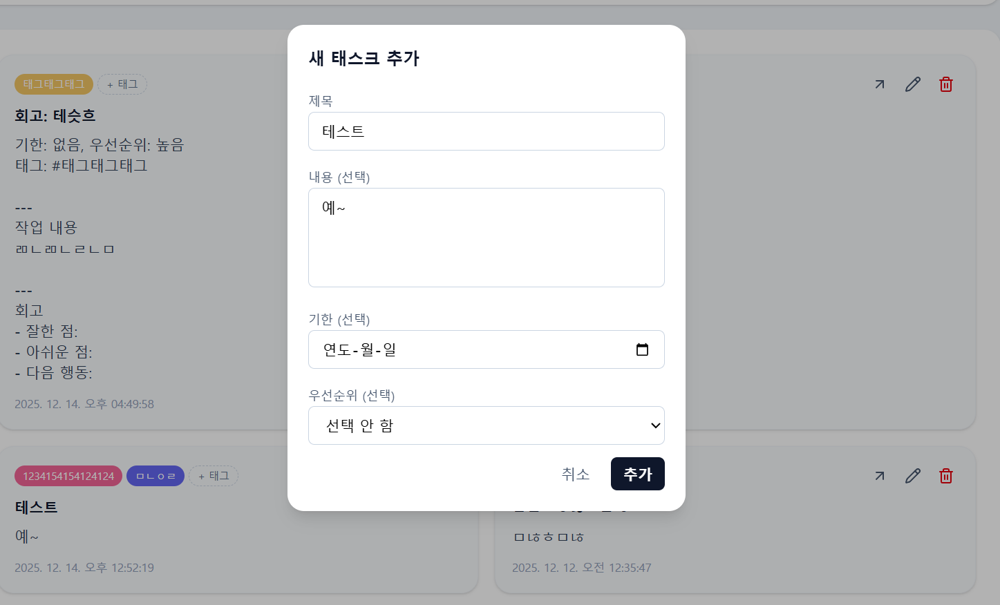

프로젝트 개요
ThinkFlow는 메모, 태스크, 회고 포스트를 하나의 흐름으로 관리하는 풀스택 생산성 앱입니다. 떠오른 생각을 기록하고, 실행할 일로 바꾸고, 완료 후 회고까지 이어지도록 설계했습니다.
제품 구조 설계와 구현을 모두 맡았습니다. 단순 CRUD 화면을 나열하기보다, 공통 아이템 모델과 타입 전환 흐름을 중심으로 앱을 구성했습니다.
담당 내용
- 메모, 포스트, 태스크를 하나의 워크플로우로 관리하는 풀스택 웹 앱을 구현했습니다.
- CRUD, 검색, 정렬, 페이지네이션, 태그 필터링 기능을 구현했습니다.
- 메모/포스트를 태스크로 전환할 때 기존 내용을 이어갈 수 있도록 승격 흐름을 설계하고 구현했습니다.
- 완료한 태스크를 회고 포스트 초안으로 전환하는 흐름을 구현했습니다.
- frontend/backend/shared 구조로 프로젝트를 나누고, 구현 전에 사용자 스토리와 기능 명세를 정리했습니다.
설계상 과제
핵심은 메모, 태스크, 포스트를 각각 따로 만드는 것이 아니라, 하나의 아이템 생명주기로 연결하는 일이었습니다. 빠른 기록, 태스크 관리, 태깅, 회고 작성을 함께 지원해야 했기 때문에 공통으로 둘 부분과 타입별로 나눌 부분을 먼저 정리했습니다.
공통 아이템 모델 위에 태스크 전용 속성을 얹고, 메모/포스트 → 태스크, 태스크 → 회고 전환 흐름에 맞춰 UI를 구성했습니다. 덕분에 기능별 화면은 나뉘어 있어도 데이터와 사용 흐름은 하나로 이어지도록 만들 수 있었습니다.
미리보기


메모, 포스트, 태스크가 하나의 흐름 안에서 이어지도록 구성한 화면입니다.